knitr::opts_chunk$set(echo = TRUE,
dev = "svg",
fig.width = 7,
fig.asp = 0.618,
fig.align = "center",
comment = "#>")Lab 7
devtools::load_all()#> ℹ Loading testlibrary(tidyverse)#> ── Attaching core tidyverse packages ──────────────────────── tidyverse 2.0.0 ──
#> ✔ dplyr 1.1.4 ✔ readr 2.1.5
#> ✔ forcats 1.0.0 ✔ stringr 1.5.1
#> ✔ ggplot2 3.5.1 ✔ tibble 3.2.1
#> ✔ lubridate 1.9.3 ✔ tidyr 1.3.1
#> ✔ purrr 1.0.2
#> ── Conflicts ────────────────────────────────────────── tidyverse_conflicts() ──
#> ✖ dplyr::filter() masks stats::filter()
#> ✖ dplyr::lag() masks stats::lag()
#> ℹ Use the conflicted package (<http://conflicted.r-lib.org/>) to force all conflicts to become errorslibrary(ggeffects)Overview
We want to calculate the power for an interaction effect in a Poisson regression. We have a binary variable, between-subjects (group) and a continuous variable x. We want to simulate:
- a main effect of
x - a main effect of
group - the interaction
x:group
The focus of the power analysis is on the interaction. Suppose that we are not sure if worth using a Poisson model we want to estimate also the type-1 error rate of using a linear model fixing the interaction to 0.
Data generation process
The data generation process is simple in this case. The y variable is sampled from a poisson distribution:
\[ y_i \sim \text{Poisson}(\lambda) \]
The linear combination of parameters can be applied on the link function space:
\[ g(\lambda) = log(\lambda) = \eta = \beta_0 + \beta_1G + \beta_2X + \beta_3G \times X \] Then applying the inverse of the link function we can see the actual values:
\[ g^{-1}(\eta) = \lambda = e^{\beta_0 + \beta_1X + \beta_2G + \beta_3X \times G} \]
Let’s start by simulating the group main effect. We can simulate that the 2 group has a 50% increase in \(y\) compared to group 1. Thus in ratio terms, \(\lambda_2/\lambda_1 = 1.5\). Then, given that we need to simulate on the log space \(\beta_1 = \log(1.5) \sim 0.41\). Then we need to fix the \(\beta_1\) that is the expected value for the group 1. Let’s fix a random value as \(\beta_0 = log(10)\). Thus:
\[ log(\lambda_1) = \beta_0 = log(10) \]
\[ log(\lambda_2) = \lambda_1 + 1.5 \lambda_1 \]
\[ log(\frac{\lambda_2}{\lambda_1}) = \beta_1 = log(1.5) \]
In R:
n <- 1e3
b0 <- log(10)
b1 <- log(1.5)
g <- c(1, 2)
lp <- b0 + b1 * ifelse(g == 1, 0, 1)
data.frame(
g, lp
)#> g lp
#> 1 1 2.302585
#> 2 2 2.708050Now we can simulate some values to see the actual pattern:
group <- rep(g, each = n/2)
y <- rpois(n, lambda = exp(b0 + b1 * ifelse(group == 1, 0, 1)))
boxplot(y ~ group)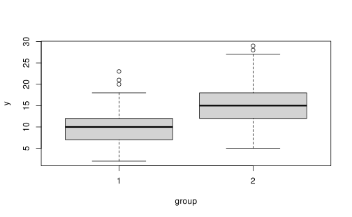
ms <- tapply(y, group, mean)
ms#> 1 2
#> 9.740 15.158ms[2]/ms[1]#> 2
#> 1.556263log(ms[2]/ms[1])#> 2
#> 0.4422873We can fit a simple model now and see if we are able to recovery the parameters:
group <- factor(group)
fit <- glm(y ~ group, family = poisson(link = "log"))
summary(fit)#>
#> Call:
#> glm(formula = y ~ group, family = poisson(link = "log"))
#>
#> Coefficients:
#> Estimate Std. Error z value Pr(>|z|)
#> (Intercept) 2.27624 0.01433 158.85 <2e-16 ***
#> group2 0.44229 0.01837 24.08 <2e-16 ***
#> ---
#> Signif. codes: 0 '***' 0.001 '**' 0.01 '*' 0.05 '.' 0.1 ' ' 1
#>
#> (Dispersion parameter for poisson family taken to be 1)
#>
#> Null deviance: 1616.6 on 999 degrees of freedom
#> Residual deviance: 1022.3 on 998 degrees of freedom
#> AIC: 5331.7
#>
#> Number of Fisher Scoring iterations: 4exp(coef(fit))#> (Intercept) group2
#> 9.740000 1.556263# group 1
exp(coef(fit)[1])#> (Intercept)
#> 9.74# group 2
exp(coef(fit)[1] + coef(fit)[2])#> (Intercept)
#> 15.158# or using predict
predict(fit, newdata = data.frame(group = c("1", "2")), type = "response")#> 1 2
#> 9.740 15.158Let’s see the effect:
plot(ggeffect(fit))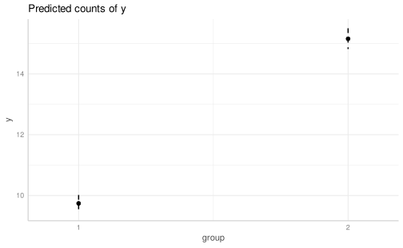
Clearly we have a lot of observations, but these can be considered as the true effects.
Let’s simulate the x effect. We can try different values because it harder to guess a plausible \(\beta\) with a continuous predictor. We simulate x as a standardized variable thus \(x \sim \mathcal{N}(0, 1)\):
x <- rnorm(n)
hist(x)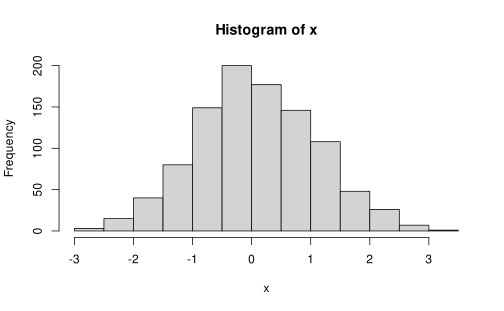
Now \(\beta_0\) is the expected value when \(x = 0\) thus the expected value for the mean of \(x\). Again, let’s fix \(\beta_0 = log(10)\). Then we can try different \(\beta_2\) and see what is the predicted range of \(y\):
betas <- c(1.01, 1.1, 1.5, 2, 5)
b0 <- log(10)
lps <- lapply(betas, function(b2) b0 + log(b2) * x)
ys <- lapply(lps, function(l) rpois(n, exp(l)))
names(ys) <- paste0("b", betas)
dd <- data.frame(ys, x)
dd |>
pivot_longer(1:length(betas), names_to = "b", values_to = "y") |>
ggplot(aes(x = x, y = y)) +
facet_wrap(~b, scales = "free") +
geom_point()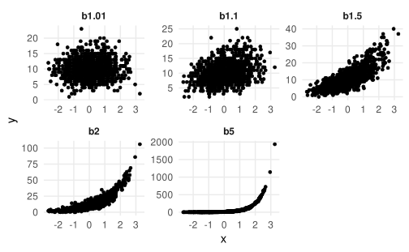
Clearly, the \(\beta_2\) effect depends on the scale of \(x\). In this case, we can use \(beta_2 = log(1.5)\). Again, let’s simulate some data and fit the model:
b2 <- log(1.5)
x <- rnorm(n)
y <- rpois(n, exp(b0 + b2 * x))
fit <- glm(y ~ x, family = poisson(link = "log"))
summary(fit)#>
#> Call:
#> glm(formula = y ~ x, family = poisson(link = "log"))
#>
#> Coefficients:
#> Estimate Std. Error z value Pr(>|z|)
#> (Intercept) 2.30667 0.01034 222.99 <2e-16 ***
#> x 0.39600 0.00976 40.57 <2e-16 ***
#> ---
#> Signif. codes: 0 '***' 0.001 '**' 0.01 '*' 0.05 '.' 0.1 ' ' 1
#>
#> (Dispersion parameter for poisson family taken to be 1)
#>
#> Null deviance: 2698.2 on 999 degrees of freedom
#> Residual deviance: 1016.0 on 998 degrees of freedom
#> AIC: 5125.7
#>
#> Number of Fisher Scoring iterations: 4plot(ggeffect(fit))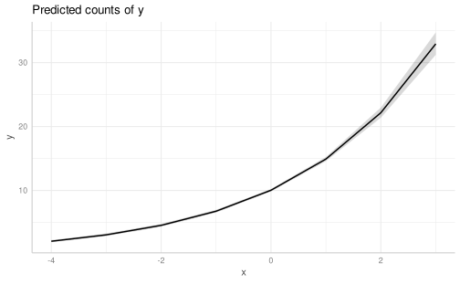
Now let’s combine the effect of x and group, without the interaction. In practice we are simulating that the effect of x is the same for each group thus the two lines y ~ x are parallel (in the link function space).
Important
For complex simulations, always create a dataframe with all conditions and subjects and then simulate the effects. I’ve used vectors without specifing the data = argument and using dataframes just for simplicity.
Now we need to decide how to code the group variable. If we use dummy coding, the \(\beta_0\) will be the expected value for group 1, when \(x = 0\). If we use sum to 0 coding e.g. group 1 = -0.5 and group 2 = 0.5, \(\beta_0\) will be the expected value when \(x = 0\) averaging over group:
- dummy-coding
- \(\beta_0\) = expected value of \(y\) for group = 1 and x = 0
- \(\beta_1\) = effect of \(x\) (assumed to be the same between groups)
- \(\beta_2\) = effect of group. Given that the two lines are parallel, centering or not \(x\) is not affecting the parameter
- sum to 0 coding
- \(\beta_0\) = expected value of \(y\) when \(x = 0\) averaging between groups
- \(\beta_1\) = effect of \(x\) (assumed to be the same between groups)
- \(\beta_2\) = effect of group. Given that the two lines are parallel, centering or not \(x\) is not affecting the parameter
Let’s use the sum to 0 coding:
b0 <- log(5) # y when x = 0 and averaged across groups
b1 <- log(1.1) # x effect
b2 <- log(1.2) # group effect
n <- 100 # total
group <- rep(c("1", "2"), each = n/2)
x <- rnorm(n)
dat <- data.frame(
id = 1:n,
group,
x
)
filor::trim_df(dat)#> id group x
#> 1 1 1 0.105
#> 2 2 1 0.507
#> 3 3 1 -0.662
#> 4 4 1 0.987
#> 5 ... ... ...
#> 6 97 2 -0.922
#> 7 98 2 0.843
#> 8 99 2 1.098
#> 9 100 2 -1.328Let’s set the contrasts:
dat$group <- factor(dat$group) # need to be a factor first
contrasts(dat$group) <- -contr.sum(2)/2 # otherwise -1 and 1
X <- model.matrix(~x+group, data = dat)
head(X)#> (Intercept) x group1
#> 1 1 0.1045875 -0.5
#> 2 1 0.5067601 -0.5
#> 3 1 -0.6620044 -0.5
#> 4 1 0.9873698 -0.5
#> 5 1 -0.3926804 -0.5
#> 6 1 1.8577561 -0.5tail(X)#> (Intercept) x group1
#> 95 1 0.2794925 0.5
#> 96 1 -0.3849792 0.5
#> 97 1 -0.9215839 0.5
#> 98 1 0.8430339 0.5
#> 99 1 1.0976529 0.5
#> 100 1 -1.3280496 0.5Let’s simulate!
dat$groupc <- contrasts(dat$group)[dat$group] # expand the contrats to have the underlying numeric vector
head(dat)#> id group x groupc
#> 1 1 1 0.1045875 -0.5
#> 2 2 1 0.5067601 -0.5
#> 3 3 1 -0.6620044 -0.5
#> 4 4 1 0.9873698 -0.5
#> 5 5 1 -0.3926804 -0.5
#> 6 6 1 1.8577561 -0.5dat$lp <- with(dat, b0 + b1 * x + b2 * groupc)
dat |>
ggplot(aes(x = x, y = lp, color = group)) +
geom_line()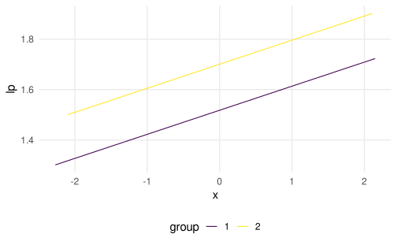
dat |>
ggplot(aes(x = x, y = exp(lp), color = group)) +
geom_line()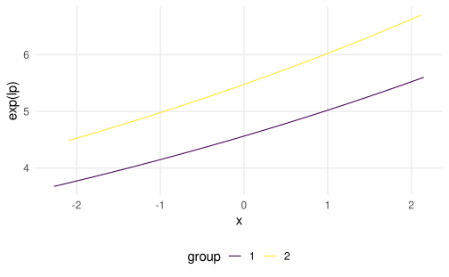
Let’s add the random part:
dat$y <- rpois(nrow(dat), exp(dat$lp))
dat |>
ggplot(aes(x = x, y = y, color = group)) +
geom_point()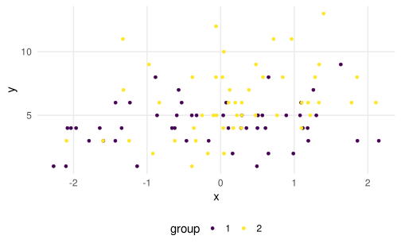
Let’s fit the model:
fit <- glm(y ~ group + x, data = dat, family = poisson(link = "log"))
summary(fit)#>
#> Call:
#> glm(formula = y ~ group + x, family = poisson(link = "log"),
#> data = dat)
#>
#> Coefficients:
#> Estimate Std. Error z value Pr(>|z|)
#> (Intercept) 1.62648 0.04494 36.193 < 2e-16 ***
#> group1 0.32966 0.08981 3.671 0.000242 ***
#> x 0.11248 0.04353 2.584 0.009772 **
#> ---
#> Signif. codes: 0 '***' 0.001 '**' 0.01 '*' 0.05 '.' 0.1 ' ' 1
#>
#> (Dispersion parameter for poisson family taken to be 1)
#>
#> Null deviance: 119.138 on 99 degrees of freedom
#> Residual deviance: 95.386 on 97 degrees of freedom
#> AIC: 441.7
#>
#> Number of Fisher Scoring iterations: 4Let’s simulate the power for these main effects using a vector of \(n\). The idea is to generate data, fit the model, extract the p-value and repeat for a lot of times.
set.seed(2023)
ns <- c(20, 30, 50, 100, 300, 500, 1000)
nsim <- 1000 # higher is better, just for example, better 10000
power_group <- rep(NA, length(ns))
power_x <- rep(NA, length(ns))
for(i in 1:length(ns)){ # loop over ns
p_group <- rep(NA, nsim)
p_x <- rep(NA, nsim)
for(j in 1:nsim){ # the actual simulation
x <- rnorm(ns[i], 0, 1)
group <- factor(rep(c("1", "2"), each = ns[i]/2))
contrasts(group) <- -contr.sum(2)/2
dat <- data.frame(x, group)
dat$groupc <- contrasts(dat$group)[dat$group]
dat$lp <- with(dat, b0 + b1 * x + b2 * groupc)
dat$y <- rpois(nrow(dat), exp(dat$lp))
fit <- glm(y ~ x + group, data = dat, family = poisson(link = "log"))
fits <- summary(fit)$coefficients
p_group[j] <- fits["group1", 4]
p_x[j] <- fits["x", 4]
}
# calculate power
power_x[i] <- mean(p_x <= 0.05)
power_group[i] <- mean(p_group <= 0.05)
}
power <- data.frame(ns, power_x, power_group)
power <- pivot_longer(power, 2:3, names_to = "effect", values_to = "power")
power |>
ggplot(aes(x = ns, y = power, color = effect)) +
geom_line()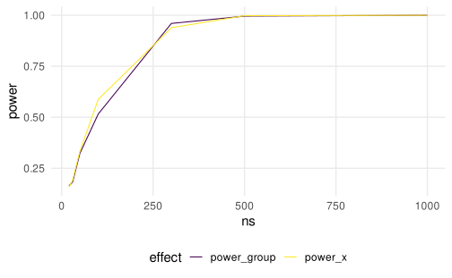
The approach with the loops is quite clear but i prefer using a more functional way. Let’s see a quick example:
# define a data generation function
sim_data <- function(n, b0 = 0, b1 = 0, b2 = 0){
x <- rnorm(n, 0, 1)
group <- factor(rep(c("1", "2"), each = n/2))
contrasts(group) <- -contr.sum(2)/2
dat <- data.frame(x, group)
dat$groupc <- contrasts(dat$group)[dat$group]
dat$lp <- with(dat, b0 + b1 * x + b2 * groupc)
dat$y <- rpois(nrow(dat), exp(dat$lp))
return(dat)
}
sim_data(20, b0 = log(5), b1 = log(1), b2 = log(2))#> x group groupc lp y
#> 1 -0.35284869 1 -0.5 1.262864 4
#> 2 -2.28999996 1 -0.5 1.262864 8
#> 3 0.24203334 1 -0.5 1.262864 4
#> 4 1.64342275 1 -0.5 1.262864 6
#> 5 -1.53507823 1 -0.5 1.262864 2
#> 6 1.16205905 1 -0.5 1.262864 2
#> 7 0.39676655 1 -0.5 1.262864 5
#> 8 1.17331498 1 -0.5 1.262864 4
#> 9 0.58318712 1 -0.5 1.262864 0
#> 10 1.06282106 1 -0.5 1.262864 1
#> 11 0.99715444 2 0.5 1.956012 5
#> 12 -0.56561737 2 0.5 1.956012 11
#> 13 -0.41987835 2 0.5 1.956012 7
#> 14 -0.71605586 2 0.5 1.956012 10
#> 15 0.55317835 2 0.5 1.956012 7
#> 16 -0.03143793 2 0.5 1.956012 10
#> 17 -0.64534515 2 0.5 1.956012 9
#> 18 0.95722964 2 0.5 1.956012 7
#> 19 -0.40550891 2 0.5 1.956012 5
#> 20 -0.90957475 2 0.5 1.956012 6Then I would create a function to fit the model that extract also the summary:
fit_fun <- function(data){
fit <- glm(y ~ x + group, data = data, family = poisson(link = "log"))
fits <- summary(fit)$coefficients
fits <- data.frame(fits)
names(fits) <- c("b", "se", "z", "p")
fits$param <- rownames(fits)
rownames(fits) <- NULL
return(fits)
}Finally a simulation function that iterate a single simulation a certain number of times:
do_sim <- function(n, b0 = 0, b1 = 0, b2 = 0, nsim = 1){
replicate(nsim, {
data <- sim_data(n, b0, b1, b2)
fit_fun(data)
}, simplify = FALSE)
}
do_sim(100, nsim = 1)#> [[1]]
#> b se z p param
#> 1 0.03488575 0.09848964 0.3542073 0.7231835 (Intercept)
#> 2 0.04358547 0.10112888 0.4309894 0.6664761 x
#> 3 0.16054692 0.19728128 0.8137970 0.4157612 group1do_sim(100, nsim = 3)#> [[1]]
#> b se z p param
#> 1 -0.11532752 0.1063442 -1.0844739 0.2781548 (Intercept)
#> 2 0.01408003 0.1025619 0.1372832 0.8908070 x
#> 3 0.02411496 0.2123412 0.1135670 0.9095810 group1
#>
#> [[2]]
#> b se z p param
#> 1 -0.06857374 0.10435130 -0.6571432 0.5110889 (Intercept)
#> 2 0.06697914 0.09935546 0.6741364 0.5002246 x
#> 3 0.29707141 0.20867112 1.4236345 0.1545523 group1
#>
#> [[3]]
#> b se z p param
#> 1 0.03276407 0.09940082 0.32961566 0.7416904 (Intercept)
#> 2 0.01003833 0.10224772 0.09817652 0.9217921 x
#> 3 -0.36675430 0.19861945 -1.84651752 0.0648171 group1Finally I create a grid of conditions and apply the do_sim function to each combination (now you will see the powerful aspect of this method):
sim <- tidyr::expand_grid(ns, b0, b1, b2, nsim = 1000)
sim#> # A tibble: 7 × 5
#> ns b0 b1 b2 nsim
#> <dbl> <dbl> <dbl> <dbl> <dbl>
#> 1 20 1.61 0.0953 0.182 1000
#> 2 30 1.61 0.0953 0.182 1000
#> 3 50 1.61 0.0953 0.182 1000
#> 4 100 1.61 0.0953 0.182 1000
#> 5 300 1.61 0.0953 0.182 1000
#> 6 500 1.61 0.0953 0.182 1000
#> 7 1000 1.61 0.0953 0.182 1000Each row is a single simulation condition:
set.seed(2023)
res <- mapply(do_sim, sim$ns, sim$b0, sim$b1, sim$b2, sim$nsim, SIMPLIFY = FALSE)Now we have a list of lists with all model results. I can attach this to the sim object to have a nested data structure with all my conditions. You need to be a little it familiar with nested dataframes but the final result is very nice.
sim$data <- res
sim#> # A tibble: 7 × 6
#> ns b0 b1 b2 nsim data
#> <dbl> <dbl> <dbl> <dbl> <dbl> <list>
#> 1 20 1.61 0.0953 0.182 1000 <list [1,000]>
#> 2 30 1.61 0.0953 0.182 1000 <list [1,000]>
#> 3 50 1.61 0.0953 0.182 1000 <list [1,000]>
#> 4 100 1.61 0.0953 0.182 1000 <list [1,000]>
#> 5 300 1.61 0.0953 0.182 1000 <list [1,000]>
#> 6 500 1.61 0.0953 0.182 1000 <list [1,000]>
#> 7 1000 1.61 0.0953 0.182 1000 <list [1,000]>Let’s compute the power, visualize effects etc.
simd <- sim |>
unnest(data) |>
unnest(data)
filor::trim_df(simd)#> ns b0 b1 b2 nsim b se z p param
#> 1 20 1.609 0.095 0.182 1000 1.72 0.097 17.733 0 (Intercept)
#> 2 20 1.609 0.095 0.182 1000 0.395 0.141 2.806 0.005 x
#> 3 20 1.609 0.095 0.182 1000 -0.055 0.199 -0.276 0.782 group1
#> 4 20 1.609 0.095 0.182 1000 1.698 0.112 15.207 0 (Intercept)
#> 5 ... ... ... ... ... ... ... ... ... ...
#> 6 1000 1.609 0.095 0.182 1000 0.23 0.028 8.092 0 group1
#> 7 1000 1.609 0.095 0.182 1000 1.581 0.014 109.759 0 (Intercept)
#> 8 1000 1.609 0.095 0.182 1000 0.096 0.015 6.599 0 x
#> 9 1000 1.609 0.095 0.182 1000 0.197 0.029 6.849 0 group1simd |>
ggplot(aes(x = b)) +
facet_wrap(~param, scales = "free") +
geom_histogram()#> `stat_bin()` using `bins = 30`. Pick better value with `binwidth`.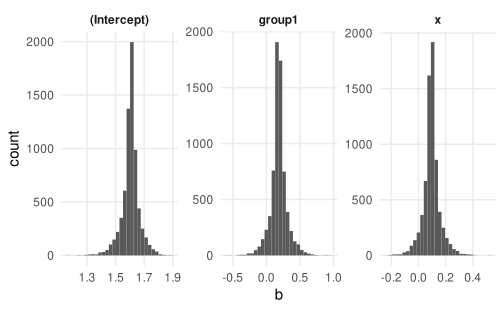
simd |>
group_by(ns, param) |>
summarise(power = mean(p <= 0.05)) |>
ggplot(aes(x = ns, y = power, color = param)) +
geom_line(lwd = 1)#> `summarise()` has grouped output by 'ns'. You can override using the `.groups`
#> argument.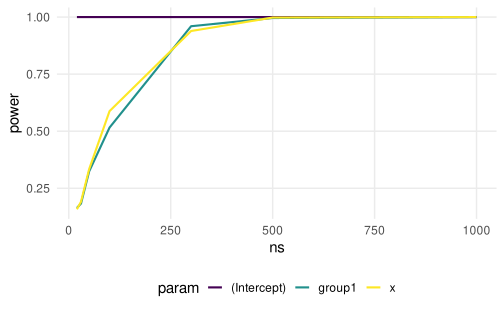
The second approach is much more flexible and you can easily change the simulation setup just by changing sim instead of adding nested loops. Clearly, if you want to stick with the for instead of mapply:
res <- vector(mode = "list", length = nrow(sim))
for(i in 1:length(res)){
res[[i]] <- do_sim(sim$ns[i], sim$b0[i], sim$b1[i], sim$b2[i], sim$nsim[i])
}The core aspect is creating a function and then iterating across conditions.
Let’s complete the simulation setup by including the interaction. Now the contrast coding and the centering is also more relevant. The interaction \(\beta_3\) is the difference in slopes between group 1 and 2. The lines are no longer parallel if \(\beta_3 \neq 0\). Now, using sum to 0 coding, the parameters are:
- \(\beta_0\) is the expected \(y\) when \(x = 0\), averaged across groups
- \(\beta_1\) is difference between groups, when \(x = 0\) (lines are no longer parallel)
- \(\beta_2\) is \(x\) slope averaged across groups
- \(\beta_3\) is difference in slopes between groups
b0 <- log(5) # y when x = 0 and averaged across groups
b1 <- log(1.1) # x effect
b2 <- log(1.2) # group effect
b3 <- log(1.1) # difference in slopes
dd <- expand_grid(group = c(-0.5, 0.5), x = rnorm(1000))
dd$lp <- b0 + b1 * dd$group + b2 * dd$x + b3 * dd$group * dd$x
dd$y <- exp(dd$lp)
dd |>
ggplot(aes(x = x, y = lp, color = factor(group))) +
geom_line()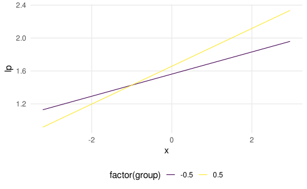
dd |>
ggplot(aes(x = x, y = y, color = factor(group))) +
geom_line()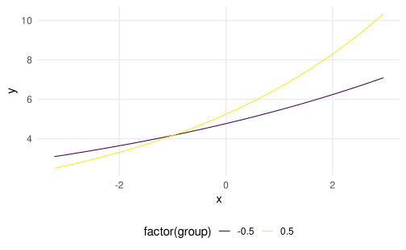
Now, let’s see the type1 error for a fixed n by using a linear model instead of GLM and fixing \(\beta_3 = 0\)
set.seed(2023)
nsim <- 5000
n <- 500
p_lm <- rep(NA, nsim)
p_glm <- rep(NA, nsim)
for(i in 1:nsim){
x <- rnorm(n)
x <- scale(x) # standardizing
group <- rep(c(-0.5, 0.5), each = n/2)
y <- rpois(n, exp(b0 + b1 * group + b2 * x + 0 * x * group)) # no interaction
fit_lm <- lm(y ~ x * group)
fit_glm <- glm(y ~ x * group, family = poisson(link = "log"))
p_lm[i] <- summary(fit_lm)$coefficients[4, 4]
p_glm[i] <- summary(fit_glm)$coefficients[4, 4]
}
mean(p_lm <= 0.05)#> [1] 0.0736mean(p_glm <= 0.05)#> [1] 0.05The type1 error is higher for the lm, we are finding interactions even if there is fixed to 0 in our simulation.
Your turn!
- Do the power analysis for the interaction using a \(\beta_3\) (the one that we defined before or another value) using the
foror functional approach (you need to define new functions to deal with the interaction). - Create another simulation where you simulate that the one of the two groups has 1/3 of participants of the other group. What happens to the power?